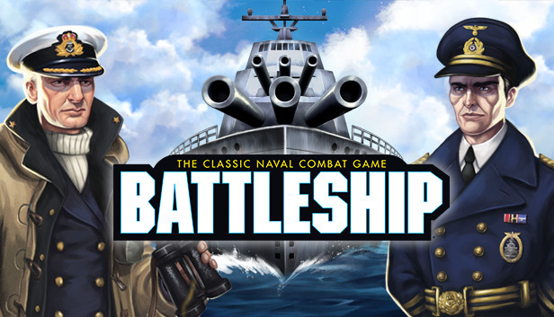

El juego Batalla Naval
Batalla Naval es un clásico juego de mesa de estrategia que ha entretenido a generaciones de jugadores desde su creación. El juego fue inventado a principios del siglo XX, aunque su popularidad se disparó después de que Milton Bradley (ahora propiedad de Hasbro) lo publicara en 1967. El juego original de Batalla Naval se jugaba en hojas de papel cuadriculado, pero con el tiempo, ha evolucionado y se ha adaptado a múltiples formatos, incluyendo versiones electrónicas y videojuegos.
El objetivo de Batalla Naval es simple: hundir la flota del oponente antes de que él hunda la tuya. Cada jugador oculta sus barcos en una cuadrícula y se turnan para disparar a las coordenadas del oponente, esperando acertar en sus barcos y finalmente hundirlos.